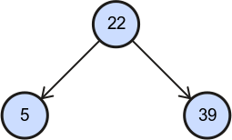
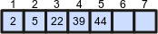

이진 탐색 트리
설명
이미지의 의미
| 이미지 | 의미 | 설명 |
|---|---|---|
| 노드 | 노드와 노드 안의 값. | |

|
선택된 노드 | 선택한 노드는 빨간색 선으로 강조 표시됩니다. 노드를 클릭하여 선택할 수 있습니다. |

|
가장자리 | 가장자리는 한 노드에서 다른 노드로의 참조입니다. 참조된 노드를 참조 노드의 자식이라고 합니다. 참조 노드를 참조된 노드의 부모라고 합니다. |
|  | 부모노드와 자녀노드 | 이진 트리에는 모든 노드의 최대 두 자식노드 (왼쪽 자식노드와 오른쪽 자식노드)가 있습니다. |

|
비교 기호 | 두 노드 (해당 값)를 비교합니다. 기호 중 하나가 중간에 표시됩니다. |

|
부모노드/ |
알고리즘은 일반적으로 트리를 통과하거나 재귀 적으로 처리 노드의 한 자식에서 자신을 호출합니다. 이러한 이미지 요소는 다음 줄에 있는 노드를 보여 줍니다. |

|
왼쪽 자식 노드 없음/ |
노드에는 왼쪽/오른쪽 자식노드가 없습니다. |
 |
입력/ |
트리를 통과하는 알고리즘의 시작/종료 이미지입니다. |

|
왼쪽 자식에서/ |
알고리즘은 왼쪽 또는 오른쪽 자식에서 온 경우 중요합니다. 이 화살표는 조건이 충족되었음을 나타냅니다. |

|
왼쪽 자식노드/ |
마찬가지로 조건이 충족되지 않았을 경우 나옵니다. |
|  | 배열 | 트리의 배열을 나타냅니다. |